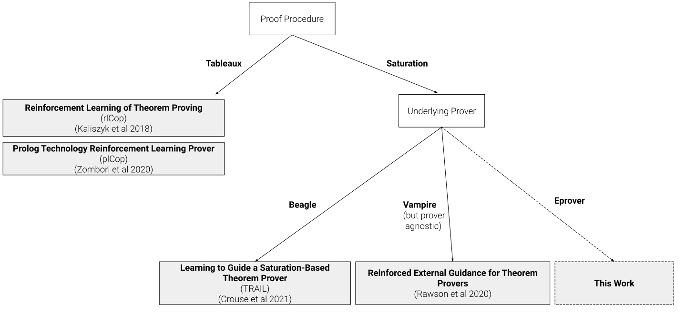
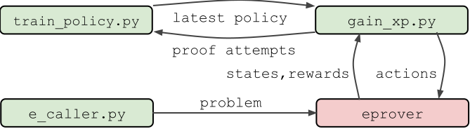

Reinforcement learning in E
Jack McKeown (mckeown@cs.miami.edu)
(advised by Geoff Sutcliffe (geoff@cs.miami.edu))
Outline
- Previous work in Reinforcement Learning (RL) for ATP
- Incorporation of RL into Eprover
- Results
- Future directions
Previous work in RL for ATP

Other choices to make
- What are the states, actions, and rewards?
- Monte Carlo Tree Search?
- Which RL algorithm to use?
- Reward Shaping?
-
Optimal policy is preserved when $r := r + \lambda f(s') - f(s)$
- Problem Sampling
- Oversample hard problems? (More meaningful reward signal)
- Oversample easy problems? (Faster training)
The choices we made
- What are the states, actions, and rewards?
- state: length and average weight of processed and unprocessed sets
- actions: choice from a static set of 75 predetermined clause evaluation functions
- rewards: 1 if proof found else 0
- Monte Carlo Tree Search? - not yet
- Which RL algorithm to use? - vanilla policy gradients
- Reward Shaping? - none
- Problem Sampling - uniform
Incorporation of RL into Eprover


Results
| RL Policy | Problems Solved | Percentage Solved |
|---|
| Uniform Distribution | 1105 | 53.2% |
| Learned Distribution | 1105 | 53.2% |
| Neural Network Policy | 1110 | 53.4% |
| E --auto | 1156 | 55.6% |
Future Directions
- Add Monte Carlo Tree Search (MCTS)
- Neural states and actions as in TRAIL
- Incorporate problem difficulty into rewards
- Other ideas for how to retain the awesomeness of E's --auto mode
Thanks for listening
Questions?
Suggestions / Advice?